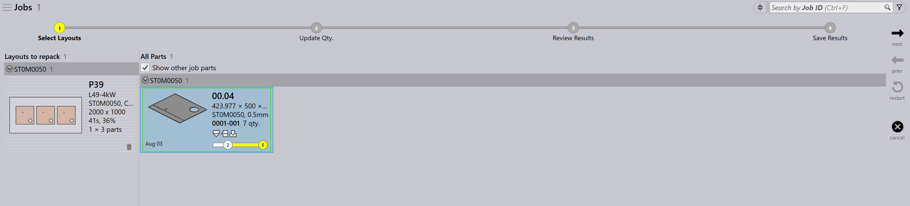

แผง layout
ส่วนนี้อธิบายการกระทำที่เกี่ยวกับ layout เช่น Send to machine, Recall from machine, Export outputs, Mark complete, Add parts…, Adapt/Compact…, Split layout และตัวเลือกอื่น ๆ ที่ใช้จัดการ อินสแตนซ์ของ layout

|
|
Send to machine
-
เมื่อ nest พร้อม (เต็มหรือจำเป็นเร่งด่วน) คุณสามารถส่งไปยังเครื่องจักรได้
-
คลิกขวาที่ nest แล้วเลือก Send to machine…
-
ระบบจะสร้างโฟลเดอร์โดยอัตโนมัติ โดยตั้งชื่อตาม nest
-
ไฟล์ผลลัพธ์ (fxlyt, NC, report, csv) จะถูกส่งออกไปยังตำแหน่งไฟล์ผลลัพธ์ของ JOB
-
nest ที่ส่งไปยังเครื่องจักรแล้วจะแสดงด้วยเครื่องหมายถูกสีน้ำเงิน
| เมื่อปล่อยออกไปแล้ว nest เหล่านั้นจะไม่ถูกนำไปจัดเรียงใหม่อีก |
Recall from machine
-
หากผลลัพธ์ต้องการการตรวจสอบหรืออัปเดต (เช่น การเพิ่มชิ้นงาน)
-
คลิกขวาที่ layout ที่ส่งออกไปแล้ว
-
เลือก Recall from machine…
-
-
ไฟล์ผลลัพธ์และโฟลเดอร์ (fxlyt, NC, report, csv) จะถูกลบ
-
nest จะกลับมาแก้ไขได้อีกครั้ง
-
คุณสามารถแก้ไขแล้วส่งไปยังเครื่องจักรอีกครั้ง
Export outputs
-
คลิกขวาที่ layout (nest) ที่ส่งไปยังเครื่องจักรแล้วคลิก Export outputs
-
ตัวเลือก Export Outputs จะส่งออกไฟล์ NC, Report และ Layout ไปยังโฟลเดอร์ผลลัพธ์ของเครื่องจักรที่เกี่ยวข้อง
-
ตัวเลือกนี้จะสร้างไฟล์ NC ขึ้นใหม่ด้วยการตั้งค่าหน่วยปัจจุบันสำหรับ layout
| Export Outputs ไม่สามารถใช้ได้กับ layout ที่เสร็จสมบูรณ์แล้วและ layout ที่รอคิวเพื่อการจัดเรียงใหม่ |
ทำเครื่องหมายเสร็จสมบูรณ์
-
เมื่อ nest ถูกประมวลผลบนเครื่องจักรแล้ว ให้คลิกขวาที่ nest แล้ว เลือก Mark complete…
-
คุณสามารถเลือก nest หลายรายการและทำเครื่องหมายเสร็จสมบูรณ์พร้อมกันได้
-
เมื่อ nest ถูกทำเครื่องหมายเสร็จสมบูรณ์
-
nest จะถูกทำเป็นสีเทา ย้ายไปท้ายรายการ และแสดงด้วยเครื่องหมายถูกสีเขียว
-
layout จะถูกนำออกจากรายการ layout ที่ใช้งานอยู่
-
สถานะของชิ้นงานและ job จะถูกอัปเดต และจำนวนที่ผลิตแล้วจะย้ายไปสู่สถานะเสร็จสมบูรณ์
-
ไฟล์ผลลัพธ์สำหรับ layout นั้นจะถูกนำออกจากตำแหน่งไฟล์ผลลัพธ์ของเครื่องจักรเพื่อหลีกเลี่ยงการใช้ซ้ำ
-
Add parts…

-
ใช้ตัวเลือกนี้เพื่อเพิ่มชิ้นงานเข้าไปใน layout ที่จัดเรียงได้ค่อนข้างไม่ดี เช่นเดียวกับ Interactive Nesting ตัวเลือกนี้ทำงานแบบตัวช่วยสร้าง และใช้กับ layout เดียวหรือหลาย layout พร้อมกันได้
-
TruSmartCAM จะเปิดตัวช่วยสร้าง Layout repack ในพื้นที่ทำงานหลัก เมื่อใช้ตัวเลือกนี้ กดค้างปุ่ม Ctrl ค้างไว้และเลือกชิ้นงาน หนึ่งชิ้นหรือมากกว่าที่จะจัดลงบน layout แล้วกด Next

-
ชิ้นงานที่เลือกจะแสดงในขั้นตอนถัดไปพร้อมคอลัมน์จำนวนที่แก้ไขได้ อัปเดตจำนวนชิ้นงานหากจำเป็นในช่อง Update Qty คลิก Next เพื่อดำเนินการไปยัง nesting โปรดทราบว่าจำนวนสามารถเพิ่มได้เท่านั้น ไม่สามารถลดได้
-
layout ทั้งหมดจะถูก nest แยกกัน และผลลัพธ์ nesting จะแสดงพร้อมชิ้นงานที่จัดวางใหม่ การเลือก layout จะแสดงชิ้นงานทั้งหมดที่มีอยู่ใน layout นั้น ผลลัพธ์จะถูกยกเลิกโดยอัตโนมัติ หากไม่มีการวางชิ้นงานใหม่ระหว่างการจัดเรียงใหม่ layout ที่มีหลายสำเนาอาจให้รูปแบบ ที่แตกต่างกันหลังการจัดเรียงใหม่
Adapt/Compact…
-
คำสั่งแบบตัวช่วยสร้างนี้ใช้เพื่อปรับ layout จากเครื่องจักรหนึ่งไปอีก เครื่องหนึ่งเมื่อเครื่องจักรเดิมหยุดทำงาน หรือเมื่อต้องการกระจายโหลดงานเครื่องจักรให้สมดุล

-
ใช้ได้เมื่อแผ่นที่วางแผนไว้หมดสต็อก และต้องวางแผน layout ใหม่บนแผ่นอื่นที่มีอยู่
-
คุณสามารถรวม layout ที่จัดวางบนแผ่นเล็กเข้าด้วยกันบนแผ่นใหญ่เพื่อใช้วัสดุอย่างมีประสิทธิภาพมากขึ้น
-
คุณสามารถแบ่ง layout ที่จัดวางบนแผ่นใหญ่ออกเป็นแผ่นเล็ก หากไม่มีสต็อกแผ่นใหญ่
-
คุณสามารถเพิ่มประสิทธิภาพการจัดวางของ layout หลายรายการ (แม้จะมาจากเครื่องจักร ต่างกัน) โดยการรวมเข้าด้วยกัน
-
หากต้องการใช้งาน ให้เลือก layout หนึ่งหรือหลายรายการแล้วคลิก Adapt/Compact… เพื่อเปิดตัวช่วยสร้างในพื้นที่ทำงาน

-
บานซ้ายแสดง layout ทั้งหมดที่เลือก และบาน Parts แสดงชิ้นงานของ layout
-
เลือกเครื่องจักรเป้าหมายและวัสดุแผ่น จากนั้นคลิก next เพื่อทำ nesting ซ้ำ
-
ผลลัพธ์ nest ใหม่จะแสดงในบานผลลัพธ์
-
คลิก next เพื่อบันทึก layout ที่ปรับหรือทำให้กระชับ

การแบ่ง layout
ตัวเลือก Split layouts… ช่วยให้คุณแบ่ง layout ที่มีอยู่ออกเป็นหลาย layout โดยการปรับจำนวน โดยไม่ต้องทำ tooling หรือ nesting ใหม่
คุณสมบัตินี้มีประโยชน์อย่างยิ่งในกรณีต่อไปนี้
-
เมื่อคุณต้องการผลิตบางส่วนของจำนวนทั้งหมดทันที และจัดตารางการผลิตจำนวนที่เหลือไว้ภายหลัง
-
เมื่อต้องกระจายความต้องการการผลิตออกเป็นหลายกะติหรือหลายวันเพื่อเพิ่ม ประสิทธิภาพ workflow และการใช้ทรัพยากร
-
เมื่อเครื่องจักรเฉพาะไม่ว่างหรือไม่สามารถใช้งานได้ชั่วคราว และคุณต้องปรับ layout ให้สอดคล้องกับข้อจำกัดการผลิตในขณะนั้น
การแบ่ง layout ทำได้ตามขั้นตอนต่อไปนี้
-
ในมุมมอง Layouts เลือก layout ที่ต้องการ

-
คลิก Split layouts…
-
ป้อนค่าที่ต้องการใน New Copies

-
คลิก OK

layout ที่เลือกจะถูกแบ่งออกเป็นสอง layout โดยมีการปรับจำนวนให้เหมาะสม